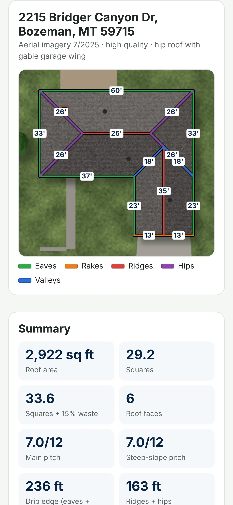
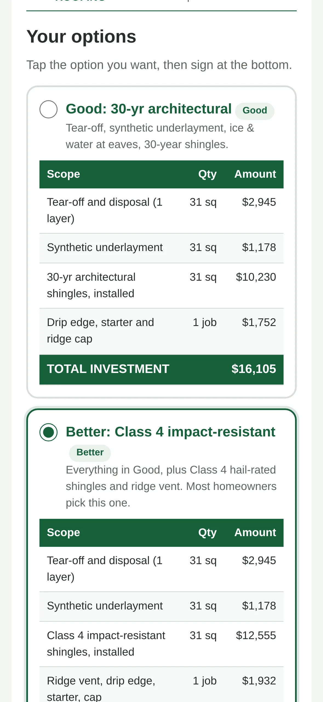

Typing it all up at night
You scroll through the video, screenshot problems, and write each one by hand.
Roofly watches the video for you
Roofly turns one phone video into a branded inspection report: problem photos circled and timed, the roof measured from above, and priced options your client can act on.
1 Upload the roof
2 The job
3 Your brand
One video in. Your logo on it.
A steady walk-around is enough.Lifted shingles near the ridgeVideo 0:42
Repair soon
Water can get under the open tabs. Re-seal or replace these shingles before the next storm.
Problems get circled and timed.
Every photo shows where in the video it came from.
Every edge measured from above.
Eaves, rakes, ridges, hips and valleys.
Options your client can act on.
Share a link or download the PDF.Most inspectors lose the job in the gap between the walk-around and the report.
You scroll through the video, screenshot problems, and write each one by hand.
Roofly watches the video for you
Clients can tell when the document could belong to anyone. Yours should look like your company.
Your logo, colors and font on every page
You order an aerial report, then wait a day or two while the owner calls someone else.
Roofly measures from the address
You only have to stay on the page while the stills upload, about a minute or two. Roofly builds the rest on its own servers and emails you a link.
Walk it with your phone. Start with one straight-on shot of the whole building, because that becomes your cover. Pause a couple of seconds on each problem.
Type the address, pick the roof type, add your logo and colors. Your phone picks the sharpest stills from the video and uploads them.
Findings with circled photos, aerial measurements and priced options. You get an email with a link when it is done, even if you closed the page.
Built in the same order as the reports Lucky Line Roofing sends in Montana, so your client can read it from top to bottom without a phone call.
Roofly pulls Google's roof data and the aerial photo, then AI traces every edge. You get area, squares with waste, pitch and edge lengths, plus a materials list that feeds the estimate.
Illustration of a traced roof, not a real property.
Reports carry your logo, colors, font, phone and license number. Type your company name and pick a color to see the cover.
Roof inspection report
123 Main St, Livingston, MT
Inspected Nov 9, 2026
Sample cover. Your own footage becomes the photo.
Roofly keeps the worst problems first and leaves them in walk-around order. The size changes how many stills and findings go in.
50 stills
Up to 20 findings. Fastest and lightest.
100 stills
Up to 50 findings. The default for most roofs.
200 stills
Up to 100 findings. Takes longer, for large or complicated roofs.
Lucky Line Roofing in Livingston, Montana writes up every roof the same way: photos with the problems circled, a free repair plan the client can use with anyone, then the estimate. Roofly packages that method so any roofer, property manager or inspector can send the same quality of report under their own name.
Justin Walton, founder. 25 years running construction projects, and a background helping drive about $1B in online sales.
A phone video of the roof and the property address. A logo and brand color are optional but make the report yours. Start with one straight-on shot of the whole building, then walk the roof and pause a couple of seconds on each problem.
About 5 minutes in our tests. You stay on the page for the first minute or two while your phone uploads the best stills. After that Roofly builds the report on its own, saves it to your account and emails you a link.
It is free to start. Create an account in the builder and make your first report today.
Roofly uses Google's roof data and high-resolution aerial imagery, then AI traces the edges. Every edge is labeled in feet so you can check it. Field-verify before you order materials, and use the exact street address so Roofly measures the right building.
Yes. Add your logo, brand color and font, plus your company details. Roofly saves them to your account so every new report carries them.
Share the report as a link or download the PDF. Nothing goes to your client unless you send it.
Tap Log in at the top of the page. Your saved reports, logo and colors are waiting.
Upload a roof video and your logo. It is free, and no card is needed.